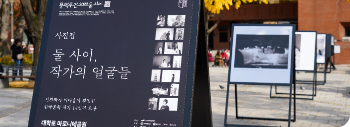

피어라 상상력, 즐겨라 문학
문학주간
사업목적
- 전국 규모 국민 참여형 연례 문학축제 개최로 문학의 의미와 가치에 대한 국민의 이해와 공감대 형성 및
지속적인 문학 진흥 붐 조성 - 문학인과 문학 향유자, 매개자 등 다양한 구성원들이 소통하고 공유하는 문학 축제의 장을 마련하여
문학계에 활력 제고
ARKO
문학 주간
사업추진방향
- 대표 문학 페스티벌 브랜딩을 위한 공공․ 민간 협력 프로그램 확대
- 작가, 문학단체 및 문학기획자 뿐만 아니라 일반시민 및 독자들이 참여하는 다양한 프로그램 추진
- 문학계 및 독자에게 문학을 통한 사회적 담론 생산, 문학예술의 사회적 가치 확산 과정에 직·간접적으로 참여할 수 있는 장 마련
사업추진계획
행사명
문학주간 2023
사업기간
2023년 9월(예정)
행사장소
대학로 마로니에공원 및 대학로 일대, 전국 단위 문학 거점 등
추진체계
주최 : 한국문화예술위원회
협력기관 : 주요문학단체/유관기관/주요출판사
운영위원회 : 문학 분야 현장 예술인
운영 및 홍보대행 사업자 : 용역입찰을 통해 선정
사업 추진절차 및 일정(예정)
1 ~ 5월
평가 및 계획수립
- 전년도 사업평가
- 예술현장 의견수렴
- 사업 운영 기본계획 수립
6 ~ 10월
추진준비 실무
- 주제 확정
- 운영위원회 구성 및 회의 개최
- 행사 운영 위착사업자 선정(공개입찰)
- 협력기관 섭외 및 프로그램 구성
- 작가스테이지 공모 및 기획
- 온·오프라인 홍보
11월
행사 운영
11 ~ 12월
결과보고 및 평가 환류
사업내용
- 활발한 작품 활동과 아울러 한국문학의 화두를 깊이 있게 다루는 문학인과 패널을 운영위원회에서 공모 또는 기획·발굴 방식으로 선정하고, 이를 프로그램으로 구성하여 독자와 만나는 문학행사 추진
- 문학 유관단체 및 기관 협력 프로그램 구성, 우리 위원회 등 문체부 산하기관의 문학사업 연계 프로그램 운영
2023년 예산 : 293백만원
- 사업운영비(일반수용비 등) : 293백만원(기획프로그램 제작·홍보 등)
주요실적 및 성과
| 구분 | 참여관객수 | 참여자 만족도 | 홍보 | |
|---|---|---|---|---|
| 오프라인 | 온라인 | |||
| 2018 | 9,716명 | 81% | 113건 | 240건 |
| 2019 | 10,527명 | 92.5% | 73건 | 277건 |
| 2020 | 34,659명 (온라인) |
94.3% | 38건 | 286건 |
| 2021 | 35,954명 (온라인) |
93.9% | 46건 | 291건 |
| 2022 | 11,065명 | 95.5% | 43건 | 93건 |
문학주간 포스터
